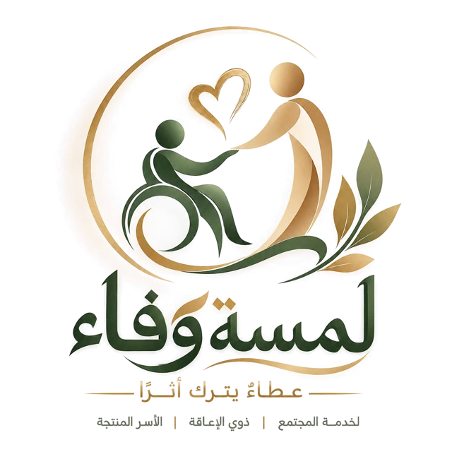

لمسة وفاء
قلوبٌ اجتمعت على الخير، نمدّ أيدينا لذوي الإعاقة وأسرهم والأسر المنتجة والمطلقات والأرامل، ونصنع معًا أثرًا يبقى. عطاءٌ يترك أثرًا
ذوو الإعاقة وأسرهمدمجٌ وتمكين
نؤمن بأن الإعاقة لا تحدّ من الطموح ولا من الفرح. لذلك نصنع لذوي الإعاقة وأسرهم أيامًا مختلفة: فعاليات دامجة، ومساحات للإبداع، ولحظات تُشعرهم بأنهم في قلب المجتمع لا على هامشه.
- فعاليات ترفيهية دامجة: أنشطة مهيّأة لاحتياجاتهم تجمعهم بأسرهم والمجتمع.
- رحلات وزيارات ميسّرة: أماكن مهيّأة تضمن سهولة الوصول والمشاركة.
- ورش المهارات والمواهب: ورش فنية وحرفية تكتشف القدرات وتنمّيها.
- مساندة الأسر ومقدّمي الرعاية: لقاءات تُشرك الأسرة وتخفّف عنها أعباء الرعاية.
- حملات التوعية بالدمج: نشر ثقافة الدمج واحترام الحقوق في المجتمع.
- المعايدة والتكريم: معايدات في المناسبات وتكريم المتميزين.
الأسر المنتجةمن مشروعٍ منزلي إلى دخلٍ مستدام
خلف كل منتجٍ منزلي قصة كفاحٍ تستحق أن تُروى. نأخذ بيد الأسر المنتجة من الفكرة إلى السوق، ليصبح شغفها مصدر دخلٍ كريمٍ ومستدام، مع اهتمامٍ خاص بذوي الإعاقة وأسرهم.
- البازارات والمعارض: أركان بيع ضمن فعالياتنا ومناسبات المجتمع.
- تطوير المنتج: تحسين الجودة والتغليف والتسعير.
- التسويق الرقمي: البيع عبر منصات التواصل والمتاجر الإلكترونية.
- تصوير المنتجات: صور احترافية تُبرز المنتج بأفضل صورة.
- الإرشاد والتوجيه: ربط الأسر بخبرات في ريادة الأعمال.
- قصص النجاح: إبراز الأسر المتميزة إعلاميًا لتعزيز انتشارها.
المطلقات والأراملسندٌ يحفظ الكرامة
في لحظات التحوّل الصعبة، تحتاج المرأة إلى من يسمعها ويؤمن بها. نوفّر للمطلقات والأرامل مساحةً آمنة تحفظ الخصوصية والكرامة، وتفتح أبواب الثقة والاستقلال.
- جلسات الدعم النفسي: لقاءات مع مختصات لتعزيز التوازن والثقة بالنفس.
- التمكين المهني: دورات تدريبية تفتح فرص العمل والدخل.
- لقاءات المساندة: مجموعات دعم آمنة لتبادل الخبرات والتجارب.
- برامج الأبناء: أنشطة ترفيهية وتعليمية مخصّصة لأبنائهن.
- الإرشاد والتوجيه: التعريف بالخدمات المتاحة والجهات المختصة.
- الدعم الموسمي: سلال وهدايا ومبادرات خاصة في المواسم.
خدمة المجتمعمبادرات تجمع الناس على الخير
نؤمن أن المجتمع المتكافل يبدأ بمبادرة صغيرة. نجمع الناس على الخير في حملاتٍ تطوعية وزياراتٍ ومبادراتٍ تُعيد للعطاء معناه الجميل.
- مبادرات رمضان: سلال رمضانية ومبادرات إفطار صائم.
- فرحة العيد: كسوة العيد ومعايدات تُدخل الفرحة على القلوب.
- العودة للمدارس: حقيبة الطالب ومستلزمات الدراسة.
- زيارات الرعاية: زيارات للمستشفيات ودور الرعاية.
- حملات بيئية: حملات النظافة والتشجير.
- التبرع بالدم: مبادرات للتبرع بالدم والتوعية الصحية.
© 2026 فريق لمسة وفاء التطوعي · أثرٌ يبقى وعطاءٌ لا ينتهي